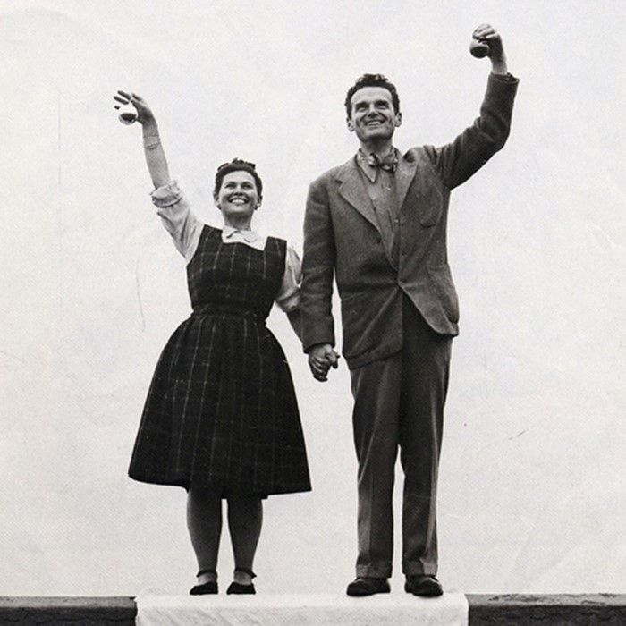
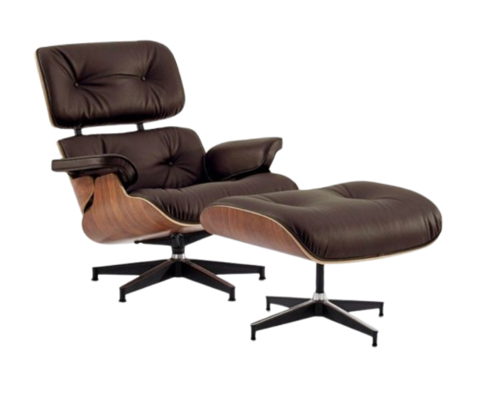
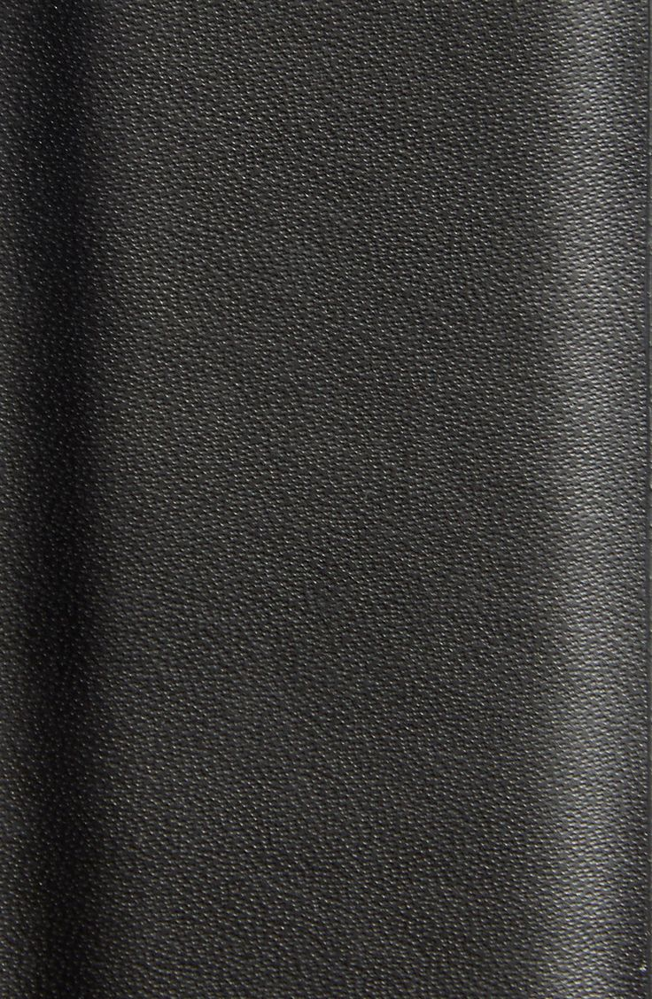

image : Charles et Ray Eames
Charles et Ray Eames ne dessinent pas seulement des meubles. Ils fabriquent des manières d’habiter.
 Sortie
Sortie
Objet iconique de 1956
L'un des fauteuils les plus célèbres du XXe siècle.
Défiler
Avant d’entrer dans les musées et d'apparaître dans les magazines.
Un fauteuil pensé comme un refuge.

Charles et Ray Eames ne dessinent pas seulement des meubles. Ils fabriquent des manières d’habiter.

Le Lounge Chair naît de cette envie : offrir le confort profond d’un vieux fauteuil club, avec la précision du design moderne.
Un objet familier, presque domestique.
Le confort devient une forme culturelle.
Au milieu des années 1950, les intérieurs américains changent de rythme.
Dans leur atelier, Charles et Ray Eames observent le mobilier qui les entoure.
Beaucoup de fauteuils modernes sont élégants .
Beaucoup sont innovants .
Leur fauteuil cherche autre chose : une présence.
Bois courbé, cuir, métal : chaque détail porte un rôle.

Le bois moulé enveloppe le corps sans l’enfermer. La coque devient une architecture miniature.

La technique disparaît derrière la sensation d’évidence.
Chaque élément trouve son équilibre.
Les pièces se rapprochent, l’objet se reconstruit.


L’assise
Le dossier.
L’appui-tête.
Le repose-pieds.
Rien ne semble superflu.
Puis vient le moment où l’objet quitte l’atelier.

Le fauteuil est présenté au public et entre dans l’imaginaire domestique.

Il traverse les salons, les bureaux, les films et les collections.
Un objet n’est jamais seulement une forme. Il garde la mémoire des gestes qui l’ont construit.
Leur travail relie l’industrie, l’image, le jeu et l’espace domestique.